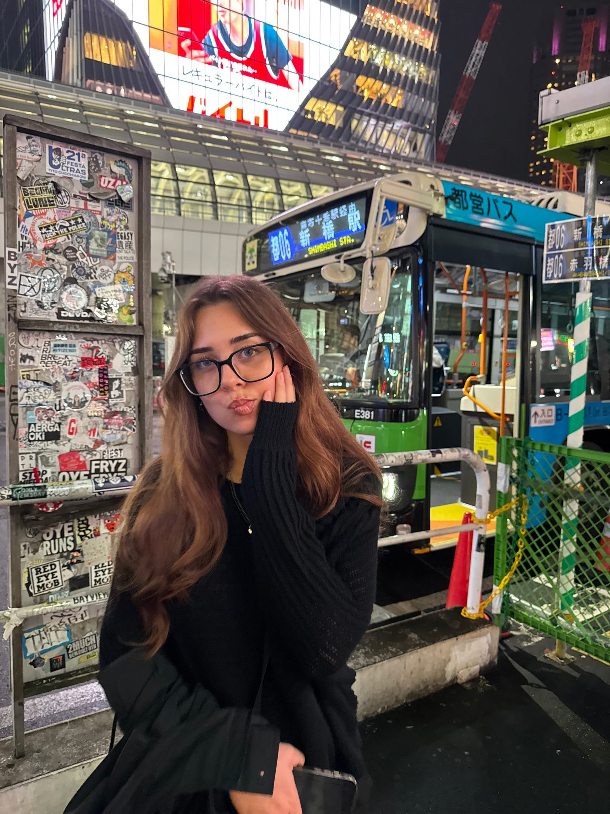
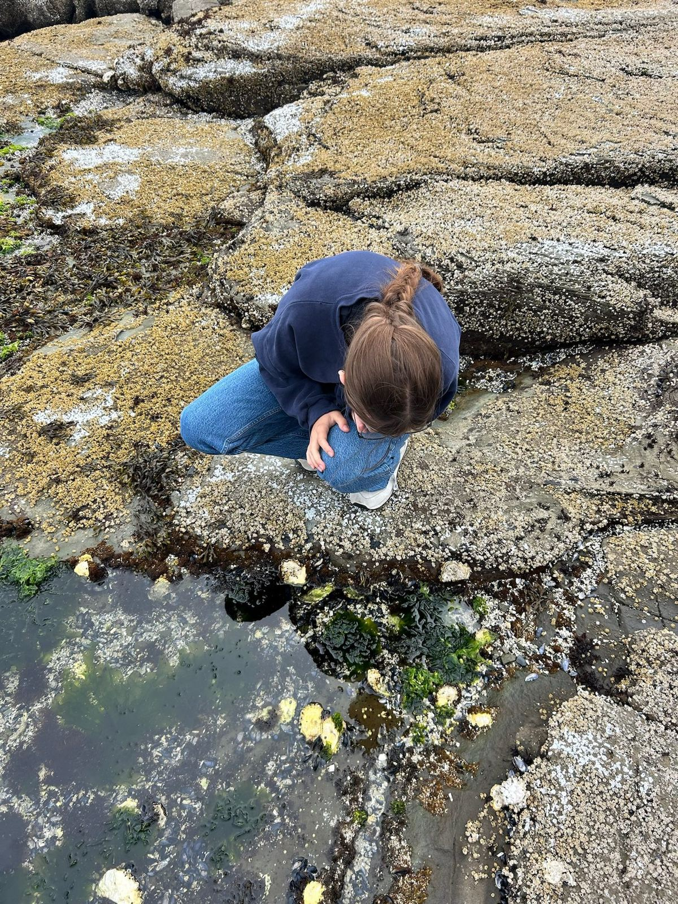

Hi, I’m Hannah!
A digital & experience designer based in Vancouver. I’ve spent the last while designing for ecomm & CPG brands at Barrel.
Design aside, I have a soft spot for puzzles, crafting and collecting handle-less mugs (yes, mugs without handles).
(01) My bread & butter
-
(01)
Storytelling for brands
Turning “we don’t have much” into a story people want to read, like PHT & McCormick CA.
-
(02)
Content & systems
Making lots of content feel organized: page modules, product grids and small design systems that scale.
-
(03)
Moving quick!!!
Agency pace, three-day design jams and quick pivots. I love a project that keeps me on my toes.
-
(04)
UX/UI
The foundation of it all: research, user flows and testing, all the way to polished interfaces. This is what started my love for design.
(02) Off the clock
I’m a hobby collector: drawing, painting, reading, cooking without a recipe, crocheting, scrapbooking and barista-ing are among a few.
I’m a big video game fan. A few favourites: Baldur’s Gate 3, The Last of Us, Resident Evil (especially 2 & 4), Hades, and the occasional cozy game. You’ll also find me spending my extra time at the beach or on trails, looking for tide pools, cool trees, and nice views.

(03) So far...
- 2026 – Freelance Designer Vancouver
- 2026 Design Intern Barrel
- 2026 UX Design Intern → Contract Designer TRIUMF
- 2026 1st place, FLUI Design Jam Dream Creatives
- 2026 Graduated, Interaction Design Capilano University
Coffee chat?
Open to new roles & freelance projects. Say hi anytime!